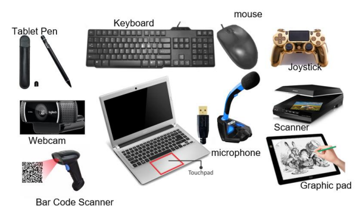
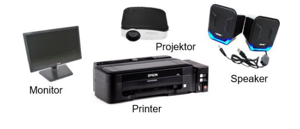

Konsep Dasar Teknik Jaringan Komputer & Telekomunikasi
"Membedah struktur komputer dan sistem transmisi data sebagai pondasi keahlian TJKT."
A. Konsep Dasar Teknik Jaringan Komputer dan Telekomunikasi
Kata komputer (computer) berasal dari bahasa Latin yakni computare yang memiliki arti menghitung. Seiring perkembangan zaman, akhirnya nama tersebut menjadi nama bagi mesin itu sendiri. Bukan hanya digunakan sebagai mesin hitung, melainkan untuk menyelesaikan banyak tugas sehingga memudahkan manusia dan mempercepat penyelesaian pekerjaan tersebut.
Komputer merupakan perangkat teknologi yang digunakan untuk memproses data sesuai dengan prosedur yang telah ditentukan. Komputer adalah sebuah perangkat teknologi yang umumnya ditemukan di berbagai lokasi, terutama di perkantoran dan rumah-rumah, yang digunakan sebagai alat bantu untuk menyelesaikan berbagai tugas dan aktivitas (Situmorang, 2020). Sementara definisi lain menyebutkan bahwa komputer merupakan sebuah perangkat yang sangat penting untuk memperlancar proses administrasi, terutama dalam tugas-tugas kasir dan pencatatan buku, karena dapat memungkinkan pelaksanaan tugas-tugas tersebut dilakukan dengan cepat, tertata rapi, dan informasi dapat disimpan dengan baik (diarsipkan) (Harahap & Maudiarti, 2020).
Berdasarkan penjelasan di atas dapat disimpulkan bahwa komputer adalah perangkat teknologi yang digunakan untuk memproses data sesuai dengan prosedur yang telah ditentukan. Media ini merupakan alat yang sangat penting dalam memperlancar proses administrasi, terutama dalam tugas-tugas kasir dan pencatatan buku. Hal ini karena komputer memungkinkan pelaksanaan tugas-tugas tersebut dilakukan dengan cepat, tertata rapi, dan informasi dapat disimpan dengan baik.
1. Organisasi Komputer
Organisasi komputer merupakan keterlibatan beberapa bagian di dalam komputer. Beberapa bagian tersebut termasuk unit operasional yang memiliki fungsi untuk mendukung beberapa proses. Proses interkoneksi terjadi di antara komponen yang menyusun sistem komputer.
Gambar 1.1 Struktur Sistem Komputer (Sumber: Amirotul Zubaida, 2022)
a. Hardware (Perangkat Keras)
1) Peralatan Masukan (Input Device)
Input device memiliki fungsi sebagai alat untuk memasukkan perintah atau data pada komputer, seperti: mouse, keyboard, scanner, dan web cam.

[Gambar 1.2 Peralatan Masukan Komputer]2) Peralatan Keluaran (Output Device)
Output device bertugas menyajikan hasil dari pemrosesan beberapa data. Contohnya: printer, monitor, dan proyektor.

[Gambar 1.3 Peralatan Keluaran Komputer]2. Arsitektur Komputer
Era 1940 & 1951
Arsitektur komputer digital dimulai dengan level ISA and Digital Logic, yang kemudian disempurnakan oleh Maurice Wilkes menjadi 3 level agar kinerja sistem lebih efisien.
Era Terbaru (Enam Level)
1) Level 0: Logika Digital
Level terendah yang merupakan sebuah rangkaian dari gerbang logika yang terdapat pada susunan rangkaian perangkat keras komputer.
2) Level 1: Arsitektur Mikro
Rangkaian dasar processor berbentuk Arithmetic Logic Unit (ALU) yang menjalankan operasi aritmatika secara fisik.
3) Level 2: Perangkat Instruksi
Umumnya disebut level ISA, berisi instruksi ataupun perintah dasar yang berasal dari komputer.
4) Level 3: Sistem Operasi
Level di mana program sistem operasi mengatur tingkatan instruksi dengan kondisi mesin.
5) Level 4: Bahasa Assembler
Beberapa instruksi program mulai dijalankan oleh programmer aplikasi pada level ini menggunakan bahasa rakitan.
6) Level 5: Bahasa Tingkat Tinggi
Bahasa pemrograman yang mudah dipahami manusia namun memerlukan interpreter/compiler untuk dieksekusi mesin.
3. Jaringan Komputer
Perkembangan teknologi mengharuskan komputer dapat berkomunikasi dalam satu jaringan. Stand alone adalah komputer mandiri, sedangkan network adalah komputer yang saling terhubung melalui media transmisi kabel maupun nirkabel.
Berbagi sumber daya dan informasi antar pengguna dalam satu sistem.
Integrasi data yang menyatukan data terpisah akibat waktu dan jarak.
Tabel 1.1 Perbandingan Spesifikasi Kabel
| No. | Jenis Kabel | Kecepatan | Kekuatan | Harga | Konektor |
|---|---|---|---|---|---|
| 1. | Coaxial | Cepat | Lebih baik | Sedang | BNC |
| 2. | STP (Shielded) | Lebih cepat | Baik | Murah | RJ 45 |
| 3. | UTP (Unshielded) | Dapat diterima | Terpengaruh interverensi elektromagnetik | Sangat Murah | RJ 45 |
| 4. | Fiber Optic (FO) | Paling cepat | Tahan terhadap interverensi elektromagnetik | Sangat mahal | ST, SC, dan LC |
Sumber: Amirotul Zubaida, 2022
4. Telekomunikasi
Telekomunikasi adalah teknik pengiriman dan penyampaian informasi (dapat berupa suara, gambar, dan tulisan) jarak jauh dari suatu tempat ke tempat lainnya melalui media elektromagnetik, baik kabel, optik, maupun tanpa kabel (nirkabel). Sejak abad ke-18, telekomunikasi sudah hadir di kehidupan manusia dan perkembangannya sangat pesat sampai saat ini. Telekomunikasi memainkan peran yang sangat penting dalam hubungan sosial manusia. Perkembangan teknologi telekomunikasi meliputi telegraf, telepon, dan televisi.
Pada tanggal 10 Maret 1876, Alexander Graham Bell melakukan komunikasi jarak jauh yang pertama kali. Alexander Graham Bell mengucapkan kalimat pertama dalam komunikasi jarak jauh tersebut kepada temannya. Kalimat tersebut adalah "Mr. Watson, come here, I need you". Semenjak saat itu, sistem telekomunikasi semakin berkembang dengan pesat.
Awal perkembangannya, telepon digunakan berdasarkan kepraktisan perangkat dalam berkomunikasi. Selanjutnya, berkembang ke dimensi sosial yang menarik emosi pelanggan untuk dapat berkomunikasi serta berhubungan dengan teman dan keluarga. Semenjak itu, telekomunikasi memegang peranan yang sangat penting, bahkan keberadaannya saat ini menjadi kebutuhan pokok yang tidak dapat dilepaskan. Mulai dari kegiatan berkomunikasi, mencari berita, belajar, hiburan, sampai berolahraga pun tidak lepas dari telepon yang saat ini dapat digenggam tangan. Istilah trendnya yakni dunia dalam genggaman.
Perkembangan sistem telekomunikasi saat ini tentunya harus mengikuti standar yang telah ditetapkan, baik standar nasional, regional, maupun internasional. Hal ini dimaksudkan agar tercapai ketertiban dalam berkomunikasi. Pada saat ini, badan atau lembaga yang menjadi standardisasi internasional yaitu International Telecommunication Union (ITU) yang berpusat di Geneva Swiss. Sekitar 2000 standardisasi telekomunikasi telah dihasilkan oleh ITU. Selain ITU, terdapat lembaga International Standardization Organization (ISO) yang memiliki sejumlah standardisasi komunikasi data.
Pada 8 September 1999, pemerintah Indonesia telah mengesahkan peraturan perundang-undangan mengenai standardisasi telekomunikasi. Peraturan perundang-undangan tersebut adalah Undang-Undang Telekomunikasi Nomor 36 Tahun 1999.
Bab 1 Bagian A Selesai